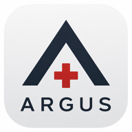
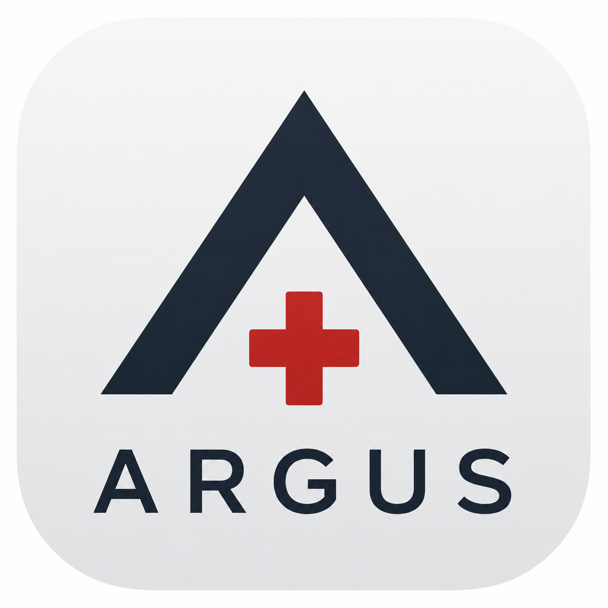

ARGUS
Digitale Sichtung und Lageführung am Verwundetensammelpunkt — feldtauglich, in Echtzeit, pseudonym.
Geführte Sichtung mit tacSTART oder direkte Kategorie per Tipp. Die laufende Nummer kommt automatisch — einhändig, mit Handschuhen, ohne Nachdenken.
Alle am selben CCP teilen dieselbe Patientenliste in Echtzeit. Sperren gegen Doppelbearbeitung, MasterMedic-Rolle, mehrere Sammelstellen geräteübergreifend zusammenführen.
Local-first: Jedes Gerät arbeitet offline voll weiter und gleicht beim Wiederverbinden automatisch ab. Kein Funkloch bremst die Erfassung.
Mit echtem Tester-Feedback in vielen Versionen verfeinert — Offline-Robustheit, Mehrgeräte-Sperre, Backups, Dokumentation.
Vielen Dank. Fragen & Diskussion willkommen.